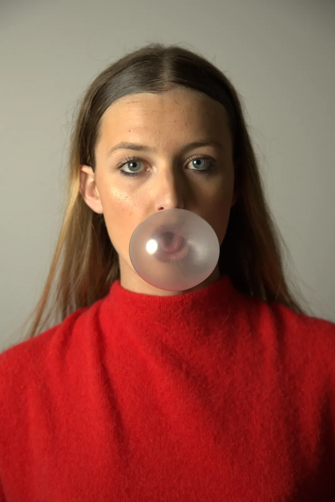
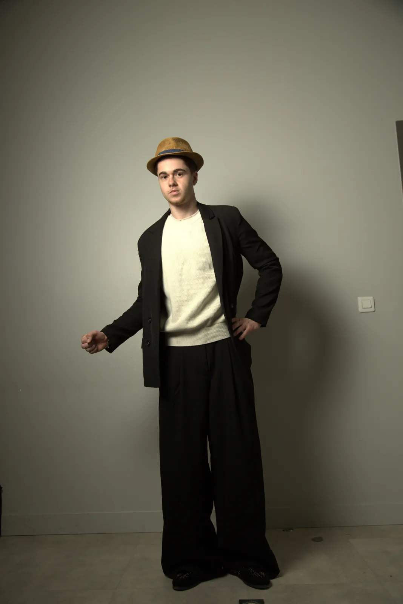
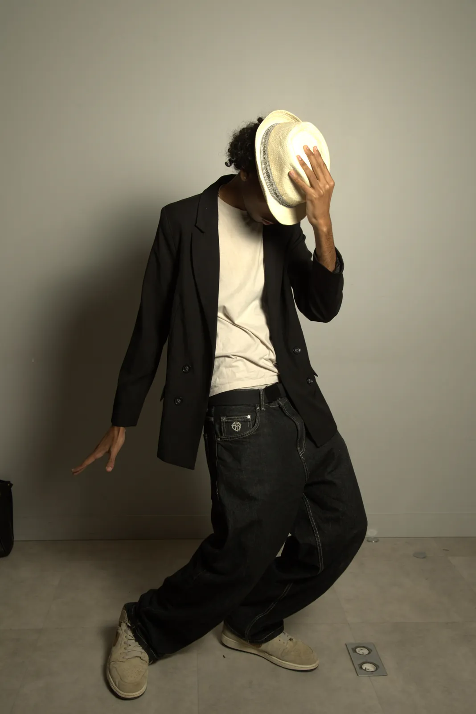

Projet Photographique
Studio
Portraits
Projet de groupe réalisé en studio dans le cadre de mes études à Bordeaux Ynov Campus. L'objectif était de reproduire des poses iconiques de la culture populaire, puis de transformer ces portraits en œuvres style pop art grâce à l'intelligence artificielle.
Contexte
Projet de groupe réalisé en studio dans le cadre de mes études à Bordeaux Ynov Campus.
Objectif
Reproduire des poses iconiques de la culture populaire, puis les transformer en pop art.
Outils
Prise de vue en studio au Canon, puis transformation par intelligence artificielle.
Galerie

Portrait 1
Britney Spears
Représentation de Britney Spears

Portrait 2
Charlie Chaplin
Représentation de Charlie Chaplin
Portrait 3
Albert Einstein
Représentation d'Albert Einstein

Portrait 4
Michael Jackson
Représentation de Michael Jackson
Portrait 5
Marilyn Monroe
Représentation de Marilyn Monroe